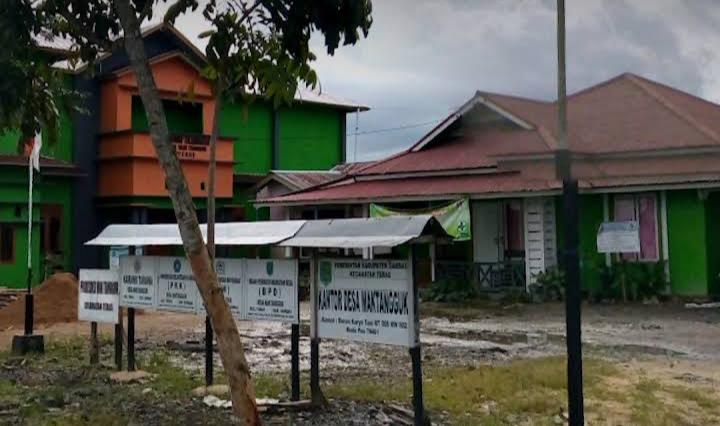

DUSUN KARYA BHAKTI
Menjelajahi keindahan alam, kehidupan masyarakat, dan potensi Desa Maktangguk, Sambas, Kalimantan Barat.
Jelajahi Desa →SELAMAT DATANG

Desa Maktangguk merupakan salah satu desa yang berada di Kabupaten Sambas, Kalimantan Barat. Suasana pedesaan yang tenang, lingkungan yang hijau, serta kehidupan masyarakat yang penuh kebersamaan menjadi bagian dari pesona desa ini.
SelengkapnyaMaktangguk, sebuah desa dengan pesona sederhana yang layak untuk dikenang.